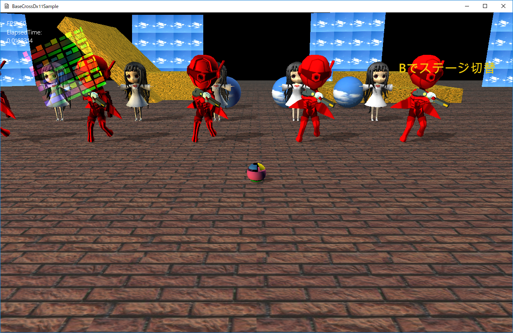
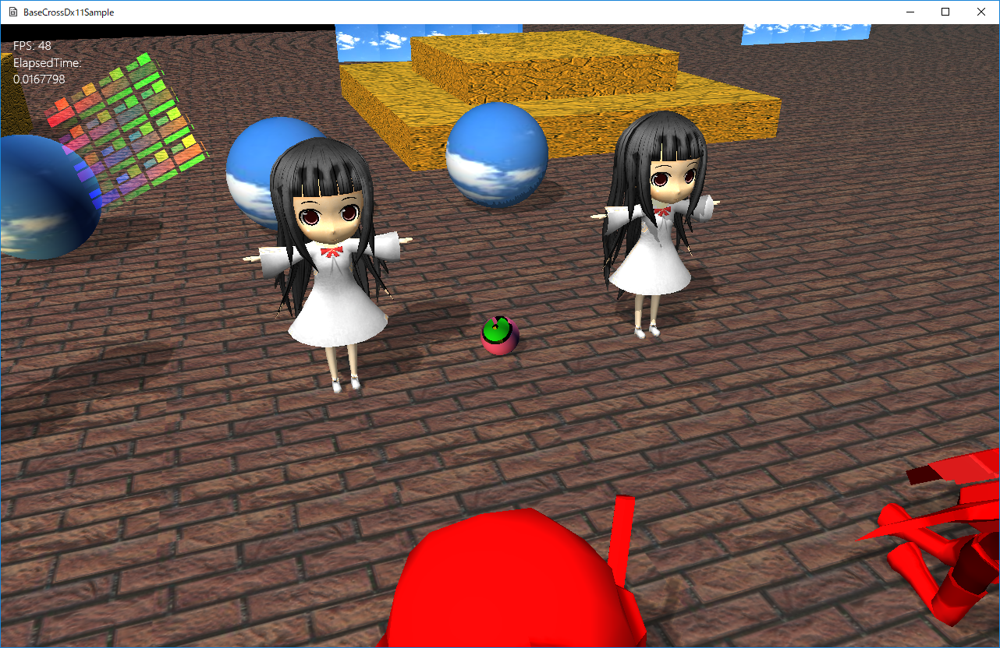

図0024a
| 系列 | Simple系 | Basic系 | シャドウマップ |
|---|---|---|---|
| コンスタントバッファ | SimpleConstants構造体 | BasicConstants構造体 | ShadowConstants構造体 |
| 描画データ（親） | DrawObjectBase構造体 | なし | |
| 描画データ（派生） | SimpleDrawObject構造体 | BcDrawObject構造体 | ShadowmapObject構造体 |
| 描画オブジェクト（親） | SimpleRendererクラス | BcRendererクラス | なし |
| 描画オブジェクト（PCTStatic） | SimplePCTStaticRendererクラス | なし | なし |
| 描画オブジェクト（PNTStatic） シャドウマップ無し |
SimplePNTStaticRendererクラス | BcPNTStaticRendererクラス | ShadowmapRendererクラス |
| 描画オブジェクト（PNTStatic） シャドウマップあり |
SimplePNTStaticRenderer2クラス | BcPNTStaticRendererクラス | ShadowmapRendererクラス |
| 描画オブジェクト（PNTStaticModel） シャドウマップ無し |
SimplePNTStaticModelRendererクラス | BcPNTStaticModelRendererクラス | ShadowmapRendererクラス |
| 描画オブジェクト（PNTStaticModel） シャドウマップあり |
SimplePNTStaticModelRenderer2クラス | BcPNTStaticModelRendererクラス | ShadowmapRendererクラス |
| 描画オブジェクト（PNTBone） シャドウマップ無し |
SimplePNTBoneModelRendererクラス | BcPNTBoneModelRendererクラス | ShadowmapRendererクラス |
| 描画オブジェクト（PNTBone） シャドウマップあり |
SimplePNTBoneModelRenderer2クラス | BcPNTBoneModelRendererクラス | ShadowmapRendererクラス |
| 描画オブジェクト（PNTnTStatic） | なし | BcPNTnTStaticRendererクラス | ShadowmapRendererクラス |
| 描画オブジェクト（PNTnTStaticModel） | なし | BcPNTnTStaticModelRendererクラス | ShadowmapRendererクラス |
| 描画オブジェクト（PNTnTBoneModel） | なし | BcPNTnTBoneModelRendererクラス | ShadowmapRendererクラス |

図0024b
この２つのゲームオブジェクトはStaticCharaクラスですCharacter.h/cppに記述があります。以下がヘッダ部です。
//--------------------------------------------------------------------------------------
/// Staticキャラ
//--------------------------------------------------------------------------------------
class StaticChara : public GameObject {
Vec3 m_Scale; ///<スケーリング
Quat m_Qt; ///<回転
Vec3 m_Pos; ///<位置
Mat4x4 m_MeshToTransformMatrix;
bool m_OwnShadowActive;
//描画データ
shared_ptr<SimpleDrawObject> m_PtrObj;
//描画オブジェクト(weak_ptr)
weak_ptr<SimplePNTStaticModelRenderer2> m_Renderer;
//シャドウマップ用描画データ
shared_ptr<ShadowmapObject> m_PtrShadowmapObj;
//シャドウマップ描画オブジェクト(weak_ptr)
weak_ptr<ShadowmapRenderer> m_ShadowmapRenderer;
public:
//--------------------------------------------------------------------------------------
/*!
@brief コンストラクタ
@param[in] StagePtr ステージのポインタ
@param[in] StartPos 位置
@param[in] OwnShadowActive 影描画するかどうか
*/
//--------------------------------------------------------------------------------------
StaticChara(const shared_ptr<Stage>& StagePtr, const Vec3& StartPos,bool OwnShadowActive);
//--------------------------------------------------------------------------------------
/*!
@brief デストラクタ
*/
//--------------------------------------------------------------------------------------
virtual ~StaticChara();
//--------------------------------------------------------------------------------------
/*!
@brief 初期化
@return なし
*/
//--------------------------------------------------------------------------------------
virtual void OnCreate() override;
//--------------------------------------------------------------------------------------
/*!
@brief 更新
@return なし
*/
//--------------------------------------------------------------------------------------
virtual void OnUpdate()override;
//--------------------------------------------------------------------------------------
/*!
@brief シャドウマップの描画処理(仮想関数)
@return なし
*/
//--------------------------------------------------------------------------------------
virtual void OnDrawShadowmap() override;
//--------------------------------------------------------------------------------------
/*!
@brief 描画
@return なし
*/
//--------------------------------------------------------------------------------------
virtual void OnDraw()override;
};
void StaticChara::OnCreate() {
//Rigidbodyの初期化
auto PtrGameStage = GetStage<GameStage>();
Rigidbody body;
body.m_Owner = GetThis<GameObject>();
body.m_Mass = 1.0f;
body.m_Scale = m_Scale;
body.m_Quat = m_Qt;
body.m_Pos = m_Pos;
body.m_CollType = CollType::typeCAPSULE;
body.m_IsFixed = true;
// body.m_IsDrawActive = true;
body.SetToBefore();
PtrGameStage->AddRigidbody(body);
//メッシュとトランスフォームの差分の設定
m_MeshToTransformMatrix.affineTransformation(
Vec3(1.0f, 1.0f, 1.0f),
Vec3(0.0f, 0.0f, 0.0f),
Vec3(0.0f, 0.0f, 0.0f),
Vec3(0.0f, -1.0f, 0.0f)
);
//行列の定義
Mat4x4 World;
World.affineTransformation(
m_Scale,
Vec3(0, 0, 0),
m_Qt,
m_Pos
);
//差分を計算
World = m_MeshToTransformMatrix * World;
//メッシュ
auto MeshPtr = App::GetApp()->GetResource<MeshResource>(L"MODEL_MESH");
//描画データの構築
m_PtrObj = make_shared<SimpleDrawObject>();
m_PtrObj->m_MeshRes = MeshPtr;
//アフィン変換
m_PtrObj->m_WorldMatrix = World;
m_PtrObj->m_Camera = GetStage<Stage>()->GetCamera();
m_PtrObj->m_UsedModelColor = false;
m_PtrObj->m_UsedModelTextre = true;
m_PtrObj->m_OwnShadowmapActive = m_OwnShadowActive;
m_PtrObj->m_ShadowmapUse = true;
//シャドウマップ描画データの構築
m_PtrShadowmapObj = make_shared<ShadowmapObject>();
m_PtrShadowmapObj->m_MeshRes = MeshPtr;
//描画データの行列をコピー
m_PtrShadowmapObj->m_WorldMatrix = World;
m_PtrShadowmapObj->m_Camera = GetStage<Stage>()->GetCamera();
}
、
body.m_IsDrawActive = true;
、
void StaticChara::OnDrawShadowmap() {
m_PtrShadowmapObj->m_Camera = GetStage<Stage>()->GetCamera();
auto shptr = m_ShadowmapRenderer.lock();
if (!shptr) {
shptr =
GetStage<Stage>()->FindTagGameObject<ShadowmapRenderer>(L"ShadowmapRenderer");
m_ShadowmapRenderer = shptr;
}
shptr->AddDrawObject(m_PtrShadowmapObj);
}
void StaticChara::OnDraw() {
m_PtrObj->m_Camera = GetStage<Stage>()->GetCamera();
auto shptr = m_Renderer.lock();
if (!shptr) {
shptr =
GetStage<Stage>()->FindTagGameObject<SimplePNTStaticModelRenderer2>(L"SimplePNTStaticModelRenderer2");
m_Renderer = shptr;
}
shptr->AddDrawObject(m_PtrObj);
}